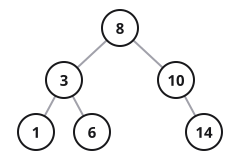

Este texto veio do site antigo da cadeira e não usa classes do kit. Dentro de uc-content ganha os espaços, a letra e as cores do resto da página.
Este parágrafo só aparece em português.
This paragraph only appears in English.
Inserir os valores pela ordem dada e escrever a altura da árvore.
8 3 10 1 6 14
| Operação | Árvore equilibrada | Pior caso |
|---|---|---|
| Procurar | O(log n) | O(n) |
| Inserir | O(log n) | O(n) |
| Remover | O(log n) | O(n) |